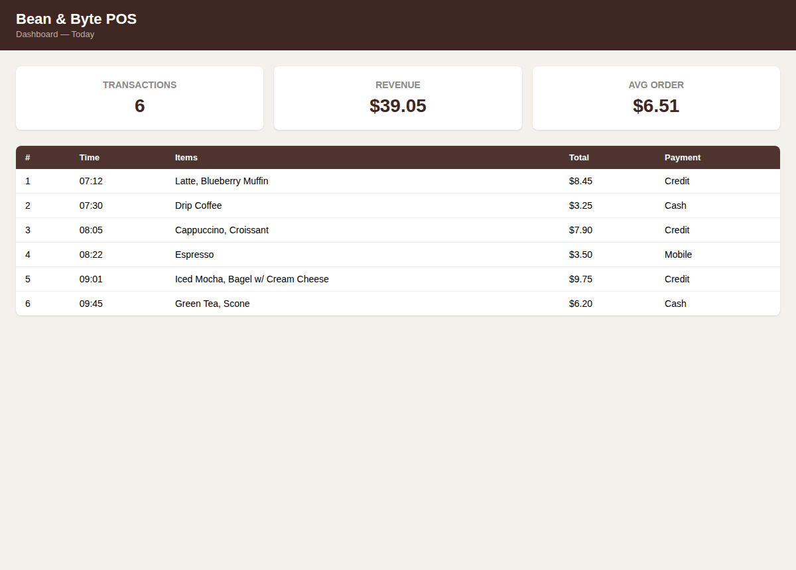
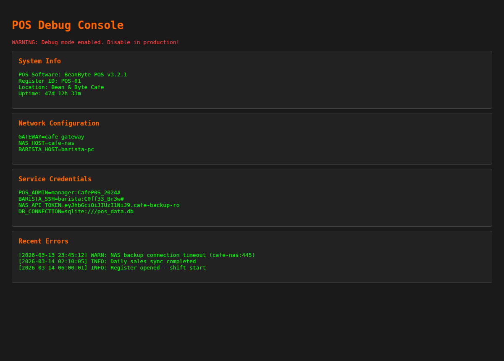
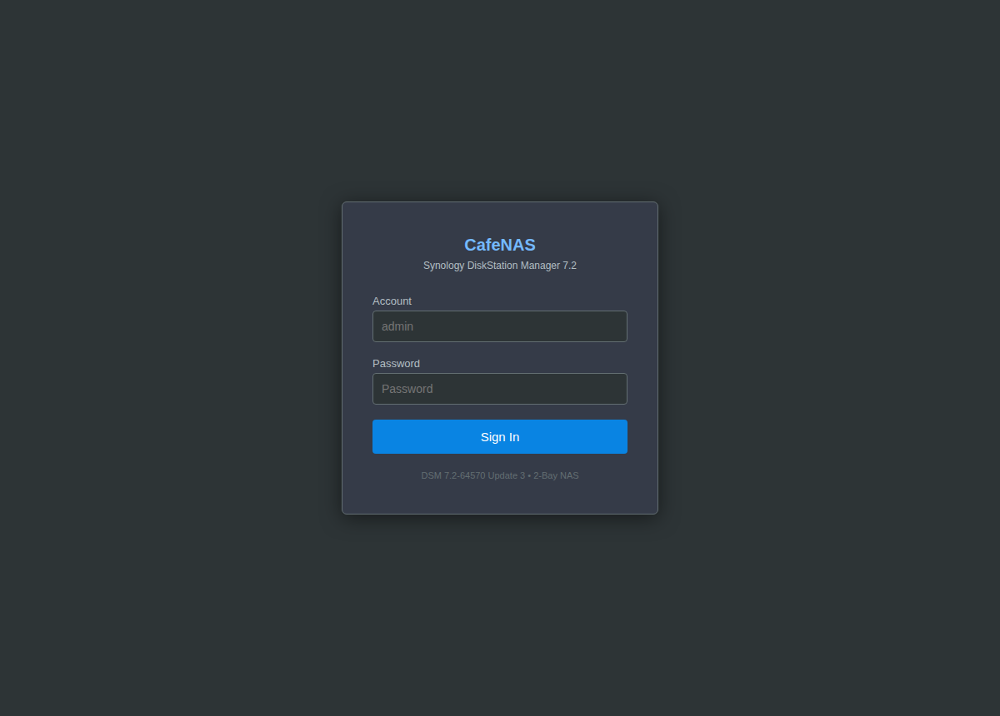

Exercise 4A: Pivot Through the POS
Before You Begin
Previous exercises identified vulnerabilities on individual devices across the Bean & Byte Cafe network. Exercise 7 chains those findings into a lateral movement scenario: you will compromise three devices in sequence, pivoting from one to the next using credentials discovered along the way. Your VPN must be connected and your terminal open before continuing.
Scenario
The Bean & Byte Cafe owner wants to understand the worst-case impact of a single compromised device. Previous assessments revealed default credentials, debug endpoints, and poor credential hygiene across the network. Your job is to demonstrate how an attacker could start with the POS terminal, the most internet-facing device, and pivot through the internal network until they reach the NAS backup server containing sensitive customer and employee data.
Your scope covers three devices: the POS terminal, the barista workstation, and the NAS backup server. Your goal is to build a credential chain from the POS to the NAS and retrieve the flag from backup data stored on the NAS.
Your Objectives
- Discover an information disclosure vulnerability on the POS terminal
- Extract credentials from a debug endpoint and use them to access the staff workstation
- Enumerate the workstation for stored credentials pointing to additional systems
- Pivot to the NAS backup server using discovered credentials
- Retrieve the flag from sensitive data in the NAS backup files
Background: Lateral Movement
Lateral movement is the process of moving through a network after an initial compromise. Attackers rarely land directly on their target; instead, they compromise an accessible system, harvest credentials or keys from it, and use those to reach the next system in the chain. Each hop reveals new credentials, configurations, or data that enable further movement.
The credential chain in this exercise follows a realistic pattern seen in enterprise breaches:
- Initial access through an exposed service (web application debug endpoint)
- Credential harvesting from the compromised system (leaked SSH credentials)
- Lateral pivot to a second system using harvested credentials
- Secondary harvesting of credentials stored by the user on the second system
- Final pivot to the high-value target (backup server with sensitive data)
graph LR
A["Attacker"] -->|"HTTP :8080<br/>/debug endpoint"| B["POS Terminal"]
B -->|"Leaked creds:<br/>barista:C0ff33_Br3w#"| C["Barista<br/>Workstation"]
C -->|"Stored creds:<br/>admin:password"| D["NAS Backup<br/>Server"]
D -->|"Flag in<br/>pos_database.sql.bak"| E["FLAG"]
style A fill:#d9534f,color:#fff
style B fill:#f0ad4e,color:#000
style C fill:#f0ad4e,color:#000
style D fill:#5cb85c,color:#fff
style E fill:#ffd700,color:#000Network segmentation is the primary defense against lateral movement. If the POS terminal cannot reach the barista workstation over SSH, the credential chain breaks at the first pivot. Defense in depth adds layers: removing debug endpoints, encrypting stored credentials, requiring multi-factor authentication, and monitoring for unusual cross-system access patterns.
Engagement Status
| Phase | Status |
|---|---|
| Reconnaissance | Complete (Exercises 1-2) |
| Service Enumeration | Complete (Exercises 3-5) |
| Exploitation | Complete (Exercise 6) |
| Lateral Movement | Active |
| Data Exfiltration | Pending |
What You Know
From prior exercises, you have already discovered:
- The POS terminal runs a web application on port 8080 with an API and admin panel
- The barista workstation accepts SSH with password authentication (
barista:C0ff33_Br3w#) - The NAS backup server uses default credentials (
admin:password) - The barista workstation has been used to harvest customer WiFi credentials
Exercise 7 demonstrates how an attacker chains these individual findings into a complete compromise path.
Walkthrough
Step 1: Launch the Exercise
Open the platform in your browser and start the exercise environment.
- Navigate to Exercises and locate Exercise 7: Pivot Through the POS
- Click Launch and wait for the status to change to Running
- Note the target IP addresses displayed in the Active Lab View
Three containers will start: the POS terminal, the barista workstation, and the NAS backup server.
Hop 1: POS Terminal: Information Disclosure
Step 2: Enumerate POS Endpoints
Confirm the POS dashboard
The POS terminal serves a web application on port 8080. Replace <pos_ip> with the POS address from the Active Lab View. The head -5 trims the output to the first few lines so you can confirm the page loads.
A block of dashboard HTML confirms the service is reachable.
Browse to the POS dashboard
Open http://<pos_ip>:8080/ in your browser to see the same page rendered. The landing page loads with no login prompt, which is the first sign that this terminal trusts anyone who can reach it on the network.

Probe for leftover endpoints
Beyond the main dashboard, probe for additional endpoints that may have been left enabled. The -o /dev/null -w '%{http_code}' flags discard the body and print only the HTTP status code.
curl -s -o /dev/null -w '%{http_code}' http://<pos_ip>:8080/debug
curl -s -o /dev/null -w '%{http_code}' http://<pos_ip>:8080/admin
curl -s -o /dev/null -w '%{http_code}' http://<pos_ip>:8080/api/transactions
A 200 response indicates the endpoint exists and is accessible.
Step 3: Extract Credentials from the Debug Endpoint
Dump the debug endpoint
The /debug endpoint exposes internal configuration, including service credentials. Fetch the full response so you can read the credential block.
Examine the output for credential entries. The debug page includes a "Service Credentials" section that leaks SSH credentials for the barista workstation. Record the username and password: you will use them in the next hop.
Browse to the debug console
Load http://<pos_ip>:8080/debug in your browser for the rendered console. The "Service Credentials" panel prints the barista SSH login in plaintext, which is exactly the leak that opens Hop 2.

Hop 2: Barista Workstation: Credential Harvesting
Step 4: SSH to the Barista Workstation
SSH to the barista workstation
Use the credentials extracted from the POS debug page to SSH into the barista workstation. sshpass -p supplies the leaked password non-interactively so the login completes in one command.
You are now on the barista workstation as the barista user.
Step 5: Enumerate the Home Directory
Enumerate the barista home directory
Check the user's home directory for stored credentials, configuration files, and access history. These commands run on the barista workstation you just landed on.
The .bash_history file reveals previous SSH connections to cafe-nas, indicating the barista user has accessed the NAS. The .config/ directory contains a saved login file.
Step 6: Read NAS Credentials
Read the saved NAS login file
The saved login file contains the NAS hostname, username, and password. Read it on the barista workstation to harvest the next set of credentials.
Record the NAS credentials.
Inspect harvested evidence
Before disconnecting, check the Documents directory for additional evidence. The file contents reveal what the actor has already stolen.
The file contains harvested customer WiFi credentials: the same data discovered in earlier exercises, confirming an ongoing credential harvesting operation. Exit the SSH session when done.
Hop 3: NAS Backup Server: Data Access
Step 7: SSH to the NAS
Pivot from the barista host to the NAS
Use the credentials found on the barista workstation to access the NAS. Run this from the barista shell so the connection originates inside the network, as a real pivot would.
A successful login drops you onto the NAS backup server as admin.
Browse to the NAS console
The NAS also exposes a web console at https://<nas_ip>:8443/ (self-signed certificate, accept the warning). The same admin:password default that worked over SSH logs into the DiskStation Manager UI, where the backup data is browsable through File Station.

Step 8: Enumerate Backup Files
List the backup directory
List the backup directory to see what data is stored. The command runs on the NAS you just reached.
The directory contains database backups, employee records, network configuration archives, and WiFi capture logs. Each file represents sensitive data that an attacker now has full access to.
Step 9: Extract the Flag
Search the database backup for the flag
The POS database backup contains the flag. grep OCR scans the dump on the NAS for the flag marker so you do not have to read the whole file.
The flag appears in the admin_config table of the database backup. The individual tokens within the flag value are prefixed with OCR-SN: in the service responses where they originated. Record the complete flag value.
Step 10: Review the Impact
Review the breach scope on the NAS
Before exiting, examine the other files to understand the full scope of the breach. Reading them on the NAS shows what an attacker would now have full access to.
The employee records contain PII (personally identifiable information) including partial SSNs. The WiFi capture log matches the copy on the barista workstation, confirming that harvested credentials are backed up to the NAS. Exit the SSH session.
Record Your Findings:
POS debug credential extraction (Step 3):
Barista NAS credentials (Step 6):
NAS flag extraction (Step 9):
Pivot chain summary:
Hop Source Target Credential Used 1 Attacker POS Terminal HTTP (no auth) 2 POS Terminal Barista Workstation barista:C0ff33_Br3w#3 Barista Workstation NAS Backup admin:passwordFlag:
OCR{...}
Step 11: Submit the Flag
Paste the flag into the Submit Flag form on the platform and click Submit.
Analysis Questions
1. The pivot chain in this exercise relies on credentials being stored in plaintext at every hop. Identify each location where credentials were exposed and suggest a mitigation for each.
Reveal Answer
Three locations expose credentials: (1) The POS /debug endpoint displays service credentials in HTML, mitigation: disable debug endpoints in production or require authentication. (2) The barista workstation stores NAS credentials in ~/.config/nas_saved_login.txt, mitigation: use a credential manager or SSH key-based authentication instead of saved passwords. (3) The NAS backup contains a database dump with the flag in an admin_config table, mitigation: encrypt backups at rest and restrict access with role-based permissions. Each plaintext credential storage point enables the next hop in the chain.
2. If the cafe implemented network segmentation so that the POS terminal could only reach the payment gateway and not the barista workstation, how would that affect this attack chain?
Reveal Answer
Network segmentation would break the chain at Hop 2. Even though the attacker obtains barista SSH credentials from the debug endpoint, they cannot use those credentials if the POS terminal has no network path to the barista workstation on port 22. The attacker would be contained to the POS terminal, limiting the impact to the data accessible from that single device. Segmentation is the most effective defense against lateral movement because it removes the network connectivity that pivoting depends on.
3. The wifi_capture_log.csv file appears on both the barista workstation and the NAS backup. What does this tell you about the threat actor's operational security?
Reveal Answer
The presence of the same file on both systems indicates that the threat actor (or negligent employee) is backing up harvested credentials to the NAS, creating a persistent copy of stolen data. The duplicate suggests the actor values data preservation over operational security: the backup creates additional evidence of the operation. It also means that even if the workstation is reimaged, the harvested data persists on the NAS. From a forensic perspective, the NAS backup timestamps could help establish a timeline of the credential harvesting operation.
Defensive Recommendations
Based on the complete pivot chain demonstrated in this exercise, the following controls would significantly reduce risk:
-
Network segmentation: Isolate the POS terminal, IoT devices, staff workstations, and backup infrastructure on separate VLANs with firewall rules restricting inter-VLAN traffic to only necessary protocols and ports.
-
Disable debug endpoints: Remove or authentication-gate all debug, status, and diagnostic endpoints before deploying applications to production.
-
Credential management: Replace plaintext credential storage with a password manager or vault. Use SSH key-based authentication for system-to-system access and rotate keys on a defined schedule.
-
Backup encryption: Encrypt backup files at rest using a key that is not stored on the same system. Restrict backup access to a dedicated service account with minimal permissions.
-
Monitoring and alerting: Implement logging for SSH access across all systems. Alert on access patterns that deviate from normal operations: for example, the barista workstation SSHing to the NAS at unusual hours.
Key Takeaways
- Lateral movement chains multiple individual vulnerabilities into a complete compromise path; each hop provides credentials or access for the next
- Information disclosure on one device can compromise an entirely different device if it leaks cross-system credentials
- Credential reuse and plaintext storage are the enablers of lateral movement; an attacker only needs to find one stored password to reach the next system
- Network segmentation is the most effective control against lateral movement because it removes the network connectivity between devices that pivoting depends on
- Backup servers are high-value targets because they aggregate sensitive data from across the network into a single, often poorly-secured location
- The WiFi capture log appearing on multiple systems demonstrates how evidence persists across a network and how forensic analysis can trace attacker operations